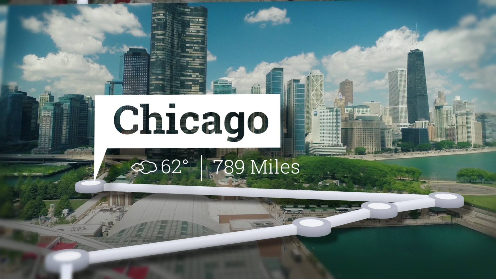
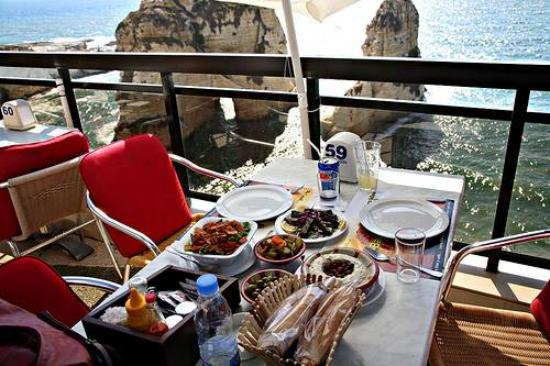
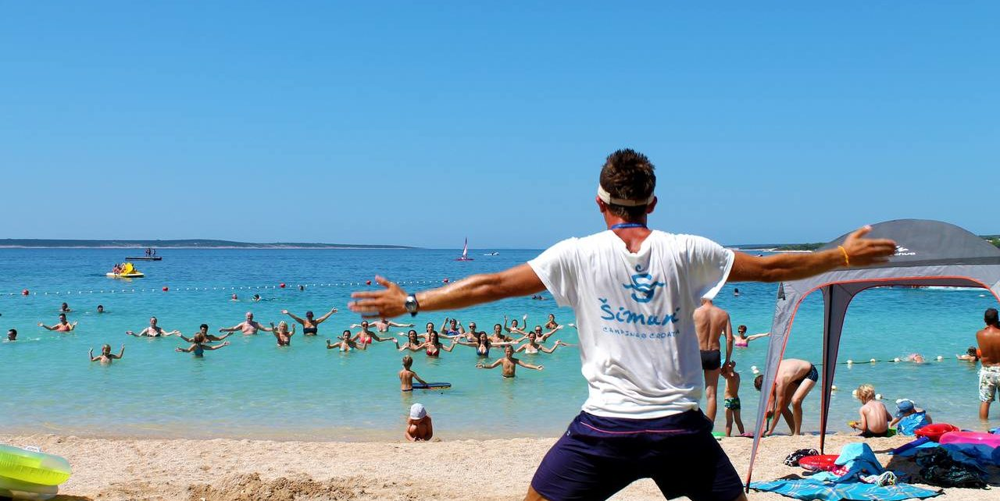
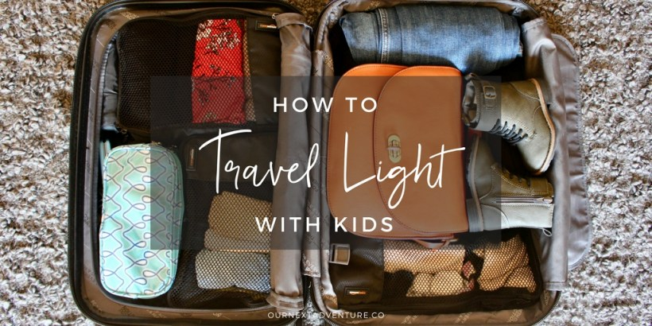

How to Plan for A Camping Trip
A common misconception about Camping is that you need to be outdoorsy or a nature fanatic in order to enjoy your time. On the contrary, camping is a great way to disconnect and spend time with friends and family, all while enjoying a bit of nature (and we could all use more of it!). Now that fall is here and temperatures are cooling, consider planning a camping trip with a few friends to get out and enjoy the season..
If you want to camp in a more secluded location, look into “primitive campsites” or state/national parks that allow you to camp just about anywhere you can pitch a tent. You will often need to purchase a park permit in advance for these campsites, but after that you’re on your own! Primitive camping allows for you to get away from the larger, crowded campgrounds, and get out into wild.

That being said, primitive camping does come with its challenges. You will likely have no potable (read: drinkable) water sources, so you will have to bring a water filter if you don’t plan to carry all of your water with you (the recommendation is 1 gallon of water per person per day; more in hotter climates). Of course, this also means you will more than likely not have access to a toilet. While the obstacles may seem a little scary, the seclusion is worth the extra effort!
If you put high value on amenities like restrooms, running water, and electricity, consider a campground area, which allows you to be in nature while still enjoying modern essentials. Most campgrounds have an electrical outlet, a place for running water, and often a place to park your car nearby so you aren’t too far removed. The area generally will also have local hiking trails, and lakes for day trips away from your campsite. Campgrounds are a great way to experience the outdoors when you aren’t quite ready to jump into the deep woods
First-time campers will probably find the notion of doing serious meal planning prior to a camping trip to be a bit bizarre. That being said, planning your meals and snacks, bringing ingredients that won’t go bad all while cooking food that tastes good (because believe us, you will get tired of eating hotdogs for every meal) will make your trip so much better. The key to planning meals and cooking while camping is to find meals that are healthy and flavorful without containing heavy or bulky ingredients (especially key if you will be hiking to your campsite). Foil meals (essentially meals containing ingredients that can be cooked in aluminum foil over a campfire) are a great option to start with. This recipe for s’mores granola and this one for Santa Fe chicken are both easy choices that look delicious.

If you have the proper camping cooking equipment, you can opt to get a bit fancier. One of our favorite camping meals is skillet potatoes with diced cured ham and eggs—all ingredients that don’t require refrigeration if used within a few days (that’s right, the eggs will stay good too as long as you keep them from breaking!). It’s also a smart idea to package your food items like spices and pre-sliced veggies/meats in sandwich bags or reusable containers, and leave the packaging at home. This will help save on space—because let’s face it, you don’t need an entire container of salt for your overnight trip! Pre-portion food into a bag so you can bring along only the amount you need.
In addition to camping, you’ll probably find that there are several other activities nearby. Hiking, fishing, kayaking, and swimming (just to name a few!) can make your trip all the more memorable. Talk to your camping buds and decide what activities you’ll add onto your itinerary beforehand. This will of course help with packing, but it will be especially useful when you’re in the middle of the woods with no Internet connection trying to find out if there is canoeing nearby (or not).

Of course, over the duration of your trip, you very well may stumble upon an amazing waterfall you can swim in or a good spot for scoping out some wildlife, but having a general game plan beforehand is crucial. If you’re camping in a national park, you’re in luck! Most parks list all nearby activities, hiking trails, etc. on their website. Even the slightest bit of pre-planning makes all the difference when camping.
4. Use a Packing List
On most other types of trips, it’s easy to run to a grocery store or the hotel front desk if you’ve forgotten something. When it comes to camping, well not so much. While you may wing it on packing for other trips, follow a list when it comes to camping to make sure you don’t skip out on any essentials. Because you generally have to bring more on a camping trip than you would on other trips, it makes all the difference to stay organized with a list. And let’s face it, you really don’t want to be the person that forgets to pack a sleeping bag or s’mores supplies.

We created a list of bare minimums based on the average camping trip below, but make sure to check the weather and the conditions of your campsite so there are no surprises!
Packing List:
● Tent
● Sleeping bag
● Small Knife (or multi-tool for extra usability)
● Day Pack (or larger hiking bag if doing a multi-day trip)
● Headlamps or flashlight (with extra batteries)
● Water (water bottles, canteens, etc.)
● Swimwear
● Sneakers or hiking boots
● Comfortable clothing (depending on how long your trip is)
● Sleepwear
● Socks and undergarments
● A jacket and rainwear (depending on weather conditions)
● Toilet paper
● Sunscreen and insect repellant
● Antiseptic wipes
● First-aid kit
● Toothbrush and toothpaste
● Any essential toiletries
● Playing cards
● Matches or lighter
● Meals for each day you’ll be camping
● Plates and utensils
● Any cooking equipment your meals requires (get lightweight versions)
● Sunglasses
● Extra black trash bags (for trash and to keep things from getting wet)

We look forward to a successful working relationship in the future.
Visiting address:
84 Emerald Nook, Freeland,
Kansas, United States of America.